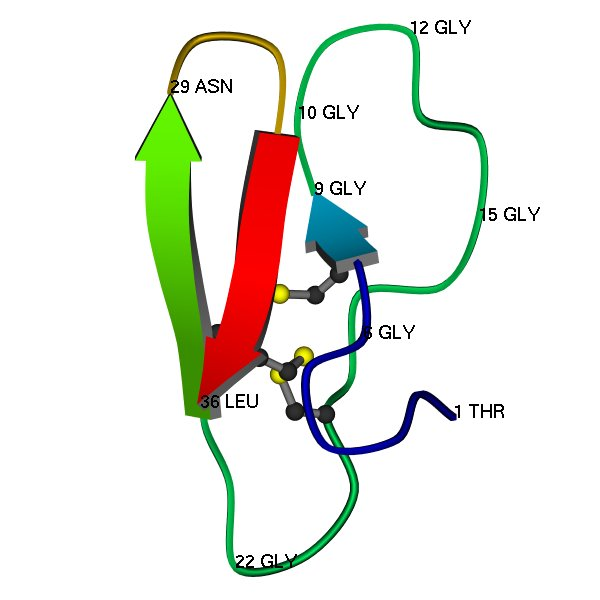
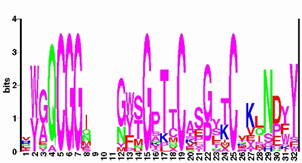

Lecture 12 Nov 2001, Per Kraulis
Let us use the the cellulose-binding domain of cellobiohydrolase I (CBD-CBH1) as an example of what one may do with a multiple sequence alignment. This is a small (about 30-35 residues) disulfide-bonded domain of known 3D structure (PDB code 1CBH). Homologous domains can be found in a number of other cellulose-degrading enzymes. It is believed that the function of the domain is either to bind with high affinity to the cellulose fiber to allow the adjacent enzymatic domain to hydrolyse the cellulose. Another possibility is that the CBD domain wedges itself in between cellulose chains, making it easier for the enzymatic domain to attack the fiber.
The multiple alignment of these sequences is taken from the Pfam database (the entry with identifier CBM_1 (formerly CBD_1), accession code PF00734). Shown below is the so-called seed alignment, containing the sequences the Pfam curators have used to define the family. This is just a part of the complete alignment file; some comments have been removed. For each sequence, the SWISS-PROT identifier and the position in the parent protein is given on the left. The top line shows the position numbers using the 1CBH 3D structure scheme. The bottom line shows the consensus, which we define here as the same amino-acid residue type in 14 or more sequences (out of 18). Please note that this definition of consensus is just one of many possible.
1 2 3
45678901...234567890123456789012
GUX1_TRIRE/481-509 HYGQCGGI...GYSGPTVCASGTTCQVLNPYY
GUN1_TRIRE/427-455 HWGQCGGI...GYSGCKTCTSGTTCQYSNDYY
GUX1_PHACH/484-512 QWGQCGGI...GYTGSTTCASPYTCHVLNPYY
GUN2_TRIRE/25-53 VWGQCGGI...GWSGPTNCAPGSACSTLNPYY
GUX2_TRIRE/30-58 VWGQCGGQ...NWSGPTCCASGSTCVYSNDYY
GUN5_TRIRE/209-237 LYGQCGGA...GWTGPTTCQAPGTCKVQNQWY
GUNF_FUSOX/21-49 IWGQCGGN...GWTGATTCASGLKCEKINDWY
GUX3_AGABI/24-52 VWGQCGGN...GWTGPTTCASGSTCVKQNDFY
GUX1_PENJA/505-533 DWAQCGGN...GWTGPTTCVSPYTCTKQNDWY
GUXC_FUSOX/482-510 QWGQCGGQ...NYSGPTTCKSPFTCKKINDFY
GUX1_HUMGR/493-521 RWQQCGGI...GFTGPTQCEEPYICTKLNDWY
GUX1_NEUCR/484-512 HWAQCGGI...GFSGPTTCPEPYTCAKDHDIY
PSBP_PORPU/26-54 LYEQCGGI...GFDGVTCCSEGLMCMKMGPYY
GUNB_FUSOX/29-57 VWAQCGGQ...NWSGTPCCTSGNKCVKLNDFY
PSBP_PORPU/69-97 PYGQCGGM...NYSGKTMCSPGFKCVELNEFF
GUNK_FUSOX/339-370 AYYQCGGSKSAYPNGNLACATGSKCVKQNEYY
PSBP_PORPU/172-200 RYAQCGGM...GYMGSTMCVGGYKCMAISEGS
PSBP_PORPU/128-156 EYAACGGE...MFMGAKCCKFGLVCYETSGKW
consensus ...QCGG.......G...C.....C.......
It is somewhat difficult to see the patterns of conservation in this table. The positions that are nearly completely conserved are easy to spot, but with more varied patterns, it becomes more difficult. For example, in position 24 there is a threonine in 9 sequences, and lysine in 5.
There is usually a problem with the numbering scheme in multiple alignments: the numbers in a multiple alignment are usually different from the numbering of any of the single sequences. (The terms "absolute numbers" versus "relative" have been used to describe the difference). Therefore it is necessary to be very careful when using sequence numbers from a multiple alignment; the numbers may be very different from the actual positions of the residues in any single sequence. For a few protein families (e.g. serine proteases of the trypsin family), a general scheme has been adopted that most scientists in those fields use.
It is common to use shaded boxes or coloured background to highlight residues or segments of a multiple alignment where the residues are strongly conserved. Commercial and some academic software can be used to add such features, but there is no common standard for exactly how this should look. It is necessary to check with the program documentation to figure out exactly how it works.
There are several other observations one might make about multiple alignments. For example, the fact that residues are aligned in a column does not necessarily mean that they are actually aligned structurally or in any other way. There is no common, accepted way of showing a 'frayed' alignment.
The correlation between residues far apart in the sequence in a protein family is usually difficult to spot in a multiple alignment. Other methods must be used to visualize this.
The combination of a known 3D structure and a multiple alignment can be very powerful for understanding a protein domain. Of course, knowledge of the biology and chemistry of the proteins increases the understanding. Often, a multiple alignment can help tie together many different observations into a coherent view of the structure and function of a protein domain.
Here is a schematic image of the 3D structure (PDB code 1CBH), as determined by protein NMR (Kraulis et al, 1989). A few residues are labelled, just to show some features of the structure, and to help with comparing with the multiple alignment.

Here is a table containing the counts per amino acid type for each position in the 18 sequences. Although it contains a lot of information, it is not particularly nice to look at, don't you agree?
| . | A | C | D | E | F | G | H | I | K | L | M | N | P | Q | R | S | T | V | W | Y | |
|---|---|---|---|---|---|---|---|---|---|---|---|---|---|---|---|---|---|---|---|---|---|
| 1 | . | 1 | . | 1 | 1 | . | . | 3 | 1 | . | 2 | . | . | 1 | 2 | 2 | . | . | 4 | . | . |
| 2 | . | . | . | . | . | . | . | . | . | . | . | . | . | . | . | . | . | . | . | 11 | 7 |
| 3 | . | 5 | . | . | 1 | . | 10 | . | . | . | . | . | . | . | 1 | . | . | . | . | . | 1 |
| 4 | . | 1 | . | . | . | . | . | . | . | . | . | . | . | . | 17 | . | . | . | . | . | . |
| 5 | . | . | 18 | . | . | . | . | . | . | . | . | . | . | . | . | . | . | . | . | . | . |
| 6 | . | . | . | . | . | . | 18 | . | . | . | . | . | . | . | . | . | . | . | . | . | . |
| 7 | . | . | . | . | . | . | 18 | . | . | . | . | . | . | . | . | . | . | . | . | . | . |
| 8 | . | 1 | . | . | 1 | . | . | . | 7 | . | . | 2 | 3 | . | 3 | . | 1 | . | . | . | . |
| 9 | 17 | . | . | . | . | . | . | . | . | 1 | . | . | . | . | . | . | . | . | . | . | . |
| 10 | 17 | . | . | . | . | . | . | . | . | . | . | . | . | . | . | . | 1 | . | . | . | . |
| 11 | 17 | 1 | . | . | . | . | . | . | . | . | . | . | . | . | . | . | . | . | . | . | . |
| 12 | . | . | . | . | . | . | 12 | . | . | . | . | 1 | 4 | . | . | . | . | . | . | . | 1 |
| 13 | . | . | . | . | . | 4 | . | . | . | . | . | . | . | 1 | . | . | . | . | . | 7 | 6 |
| 14 | . | . | . | 1 | . | . | . | . | . | . | . | 2 | 1 | . | . | . | 8 | 6 | . | . | . |
| 15 | . | . | . | . | . | . | 18 | . | . | . | . | . | . | . | . | . | . | . | . | . | . |
| 16 | . | 2 | 1 | . | . | . | . | . | . | 1 | . | . | 1 | 9 | . | . | 2 | 1 | 1 | . | . |
| 17 | . | . | . | . | . | . | . | . | . | 2 | 1 | . | . | 1 | . | . | . | 14 | . | . | . |
| 18 | . | 1 | 4 | . | . | . | . | . | . | . | . | 2 | 1 | . | 1 | . | . | 8 | 1 | . | . |
| 19 | . | . | 18 | . | . | . | . | . | . | . | . | . | . | . | . | . | . | . | . | . | . |
| 20 | . | 7 | . | . | 1 | . | . | . | . | 2 | . | . | . | 1 | 1 | . | 2 | 2 | 2 | . | . |
| 21 | . | 1 | . | . | 3 | 1 | 1 | . | . | . | . | . | . | 2 | . | . | 9 | 1 | . | . | . |
| 22 | . | . | . | . | . | . | 12 | . | . | . | . | . | . | 6 | . | . | . | . | . | . | . |
| 23 | . | . | . | . | . | 2 | 1 | . | . | . | 3 | . | 1 | . | . | . | 4 | 2 | . | . | 5 |
| 24 | . | 1 | . | . | . | . | . | . | 1 | 5 | . | 1 | . | . | . | . | . | 9 | 1 | . | . |
| 25 | . | . | 18 | . | . | . | . | . | . | . | . | . | . | . | . | . | . | . | . | . | . |
| 26 | . | 1 | . | . | 1 | . | . | 1 | . | 2 | . | 2 | . | . | 2 | . | 1 | 2 | 5 | . | 1 |
| 27 | . | 1 | . | . | 2 | . | . | . | . | 9 | . | . | . | . | . | . | . | 1 | 3 | . | 2 |
| 28 | . | . | . | 1 | . | . | . | . | 3 | . | 6 | 1 | . | . | 4 | . | 2 | 1 | . | . | . |
| 29 | . | . | . | . | . | . | 1 | 1 | . | . | . | . | 14 | . | . | . | 2 | . | . | . | . |
| 30 | . | . | . | 9 | 3 | . | 1 | . | . | . | . | . | . | 4 | 1 | . | . | . | . | . | . |
| 31 | . | . | . | . | . | 4 | 1 | . | 1 | 1 | . | . | . | . | . | . | . | . | . | 4 | 7 |
| 32 | . | . | . | . | . | 1 | . | . | . | . | . | . | . | . | . | . | 1 | . | . | 1 | 15 |
A very useful representation of the conservation patterns is the so-called sequence logo. This shows the conserved residues as larger characters, where the total height of a column is proportional to how conserved that position is. Technically, the height is proportional to the information content of the position. Here is a web site for generating a sequence logo in PostScript format from an alignment.

On closer examination of this multiple alignment (together with the known 3D structure), there are a number of features in the multiple sequence alignment CBD_1 that stand out. For example: